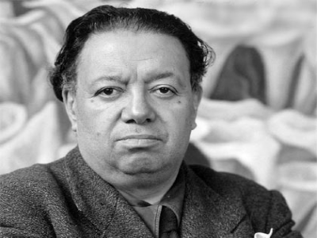
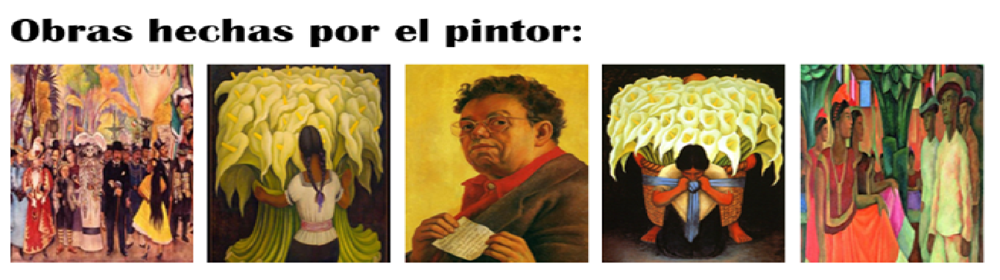

Diego Rivera

Bibliografia
Diego Rivera (Guanajuato, México, 8 de diciembre de 1886-Ciudad de México, íd., 24 de noviembre de 1957)3 fue un destacado muralista mexicano de ideología comunista, famoso por plasmar obras de alto contenido político y social en edificios públicos. La obra de Diego y de su esposa, la pintora Frida Kahlo, se influyeron mutuamente. Fue creador de diversos murales en distintos puntos del ahora llamado Centro Histórico de la Ciudad de México, así como en la Escuela Nacional de Agricultura de Chapingo,4 y en otras ciudades mexicanas (Cuernavaca y Acapulco), norteamericanas y sudamericanas (Buenos Aires, San Francisco, Detroit y Nueva York).
